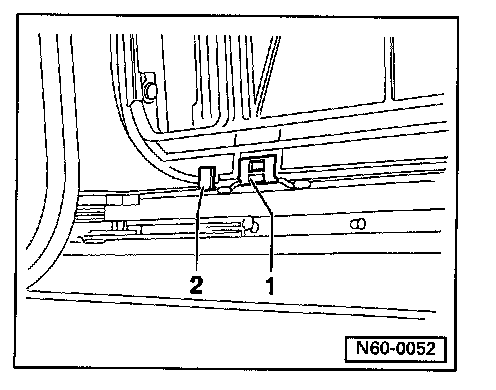

Removal
Sunroof Headliner Removal

^ Sunroof glass panel and trim frame removed
^ Sunroof unit in "closed position"
- Unclip stop -2- on one side and press headliner toward this side.
- Lever slide -1-out of guide channel, on opposite side, (from front to rear) using screwdriver.
- Swing headliner out of assembly unit.